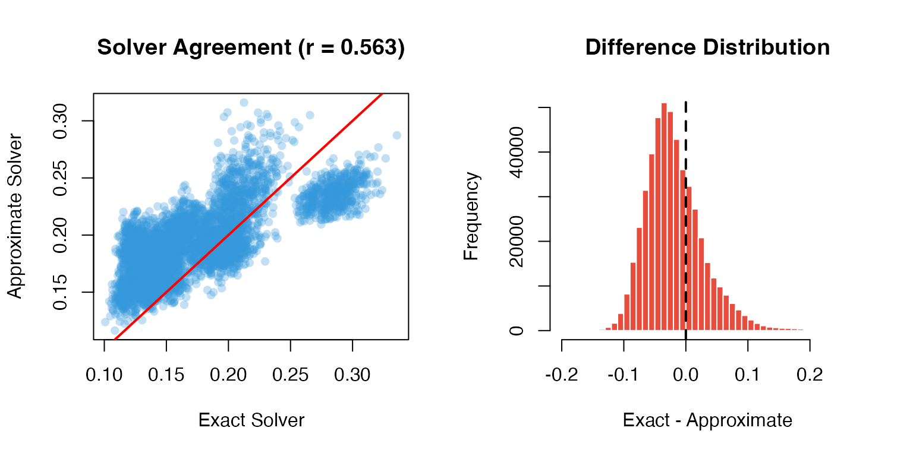
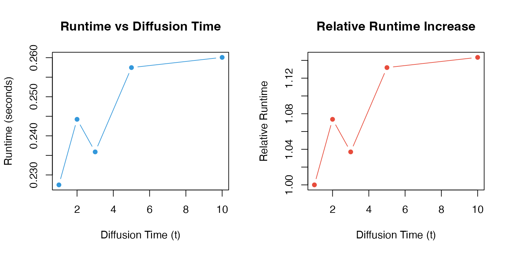
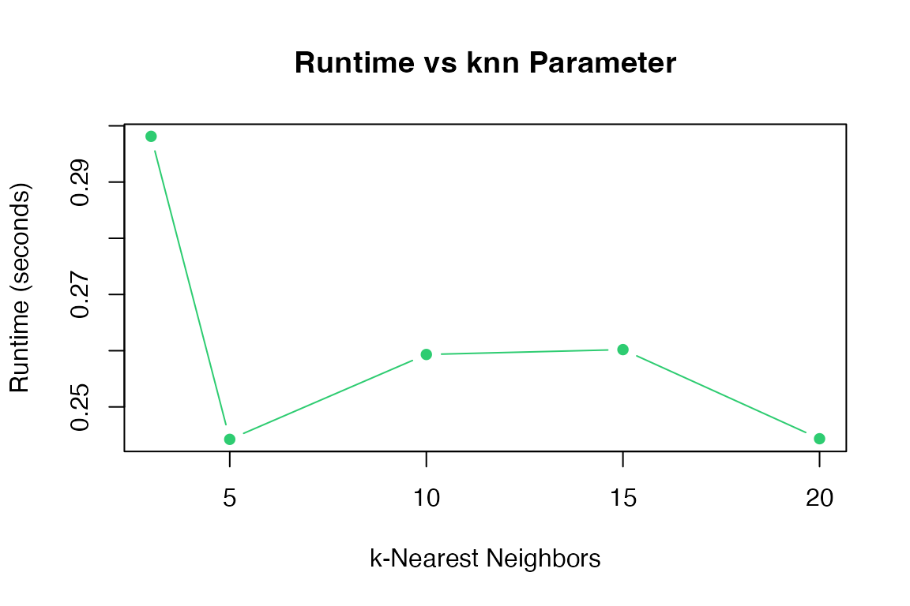
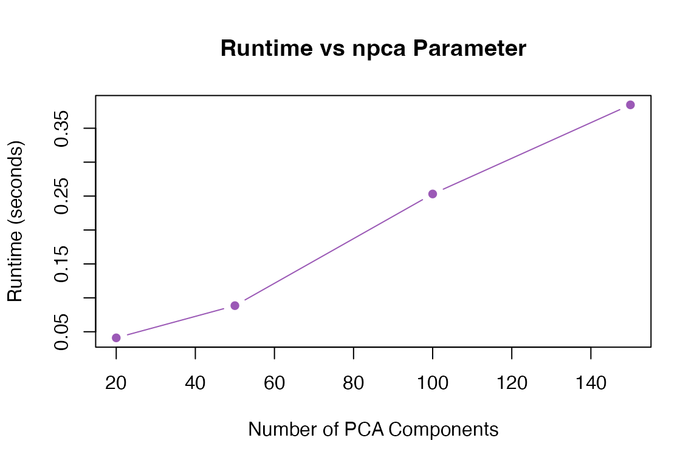

Overview
This vignette benchmarks MAGICR performance across different data sizes and parameter configurations, helping users optimize their analysis workflow.
Setup
library(MAGICR)
library(Matrix)
# Helper function for timing
benchmark <- function(expr, name = "Operation") {
start <- Sys.time()
result <- eval(expr)
elapsed <- as.numeric(difftime(Sys.time(), start, units = "secs"))
cat(sprintf("%s: %.2f seconds\n", name, elapsed))
invisible(list(result = result, time = elapsed))
}Data Size Impact
Generating Test Data
# Generate sparse test matrices of varying sizes
generate_test_data <- function(n_cells, n_genes, sparsity = 0.9) {
set.seed(42)
data <- matrix(rpois(n_cells * n_genes, lambda = 2),
nrow = n_cells, ncol = n_genes)
data[runif(length(data)) < sparsity] <- 0
colnames(data) <- paste0("Gene", seq_len(n_genes))
rownames(data) <- paste0("Cell", seq_len(n_cells))
data
}
# Test datasets
sizes <- list(
small = c(100, 500),
medium = c(500, 1000),
large = c(1000, 2000)
)Benchmarking Different Sizes
results <- list()
for (size_name in names(sizes)) {
n_cells <- sizes[[size_name]][1]
n_genes <- sizes[[size_name]][2]
cat(sprintf("\n=== %s dataset: %d cells x %d genes ===\n",
size_name, n_cells, n_genes))
test_data <- generate_test_data(n_cells, n_genes)
# Benchmark
bench <- benchmark(
magic(test_data, t = 3, verbose = FALSE),
name = sprintf("MAGIC (%s)", size_name)
)
results[[size_name]] <- bench$time
}
#>
#> === small dataset: 100 cells x 500 genes ===
#> MAGIC (small): 0.04 seconds
#>
#> === medium dataset: 500 cells x 1000 genes ===
#> MAGIC (medium): 1.19 seconds
#>
#> === large dataset: 1000 cells x 2000 genes ===
#> MAGIC (large): 5.24 secondsSolver Comparison
Exact vs Approximate
# Medium-sized test data
test_data <- generate_test_data(500, 1000)
cat("=== Solver Comparison ===\n\n")
#> === Solver Comparison ===
# Exact solver
exact_bench <- benchmark(
magic(test_data, t = 3, solver = "exact", verbose = FALSE),
name = "Exact solver"
)
#> Exact solver: 1.20 seconds
# Approximate solver
approx_bench <- benchmark(
magic(test_data, t = 3, solver = "approximate", npca = 50, verbose = FALSE),
name = "Approximate solver"
)
#> Approximate solver: 0.43 seconds
cat(sprintf("\nSpeedup: %.1fx\n", exact_bench$time / approx_bench$time))
#>
#> Speedup: 2.8xAccuracy Comparison
# Compare results
exact_result <- as.matrix(exact_bench$result)
approx_result <- as.matrix(approx_bench$result)
# Correlation between methods
cor_val <- cor(as.vector(exact_result), as.vector(approx_result))
cat(sprintf("Correlation between exact and approximate: %.4f\n", cor_val))
#> Correlation between exact and approximate: 0.5631
# Visualization
par(mfrow = c(1, 2))
# Scatter plot
plot(as.vector(exact_result)[1:5000],
as.vector(approx_result)[1:5000],
pch = 16, col = adjustcolor("#3498db", 0.3),
xlab = "Exact Solver", ylab = "Approximate Solver",
main = sprintf("Solver Agreement (r = %.3f)", cor_val))
abline(0, 1, col = "red", lwd = 2)
# Difference distribution
diff <- exact_result - approx_result
hist(as.vector(diff), breaks = 50,
main = "Difference Distribution",
xlab = "Exact - Approximate",
col = "#e74c3c", border = "white")
abline(v = 0, col = "black", lwd = 2, lty = 2)
Parameter Impact
Effect of t (Diffusion Time)
test_data <- generate_test_data(200, 500)
t_values <- c(1, 2, 3, 5, 10)
t_times <- numeric(length(t_values))
for (i in seq_along(t_values)) {
start <- Sys.time()
magic(test_data, t = t_values[i], verbose = FALSE)
t_times[i] <- as.numeric(difftime(Sys.time(), start, units = "secs"))
}
par(mfrow = c(1, 2))
# Runtime
plot(t_values, t_times, type = "b", pch = 16, col = "#3498db",
xlab = "Diffusion Time (t)", ylab = "Runtime (seconds)",
main = "Runtime vs Diffusion Time")
# Relative increase
plot(t_values, t_times / t_times[1], type = "b", pch = 16, col = "#e74c3c",
xlab = "Diffusion Time (t)", ylab = "Relative Runtime",
main = "Relative Runtime Increase")
Effect of knn
knn_values <- c(3, 5, 10, 15, 20)
knn_times <- numeric(length(knn_values))
for (i in seq_along(knn_values)) {
start <- Sys.time()
magic(test_data, t = 3, knn = knn_values[i], verbose = FALSE)
knn_times[i] <- as.numeric(difftime(Sys.time(), start, units = "secs"))
}
plot(knn_values, knn_times, type = "b", pch = 16, col = "#2ecc71",
xlab = "k-Nearest Neighbors", ylab = "Runtime (seconds)",
main = "Runtime vs knn Parameter")
Effect of npca
npca_values <- c(20, 50, 100, 150)
npca_times <- numeric(length(npca_values))
for (i in seq_along(npca_values)) {
start <- Sys.time()
magic(test_data, t = 3, npca = npca_values[i], verbose = FALSE)
npca_times[i] <- as.numeric(difftime(Sys.time(), start, units = "secs"))
}
plot(npca_values, npca_times, type = "b", pch = 16, col = "#9b59b6",
xlab = "Number of PCA Components", ylab = "Runtime (seconds)",
main = "Runtime vs npca Parameter")
Memory Usage
Sparse vs Dense Input
# Create sparse and dense versions
test_dense <- generate_test_data(300, 800)
test_sparse <- Matrix::Matrix(test_dense, sparse = TRUE)
cat("=== Memory Comparison ===\n")
#> === Memory Comparison ===
cat(sprintf("Dense matrix size: %.2f MB\n",
object.size(test_dense) / 1024^2))
#> Dense matrix size: 1.90 MB
cat(sprintf("Sparse matrix size: %.2f MB\n",
object.size(test_sparse) / 1024^2))
#> Sparse matrix size: 0.31 MB
cat(sprintf("Compression ratio: %.1fx\n\n",
as.numeric(object.size(test_dense)) /
as.numeric(object.size(test_sparse))))
#> Compression ratio: 6.1x
# Benchmark both
dense_bench <- benchmark(
magic(test_dense, t = 3, verbose = FALSE),
name = "Dense input"
)
#> Dense input: 0.60 seconds
sparse_bench <- benchmark(
magic(test_sparse, t = 3, verbose = FALSE),
name = "Sparse input"
)
#> Sparse input: 0.58 secondsRecommendations
Based on benchmarking results:
Small Datasets (<1,000 cells)
# Use exact solver with default parameters
result <- magic(data, t = 3, solver = "exact")Medium Datasets (1,000-10,000 cells)
# Consider approximate solver
result <- magic(data, t = 3, solver = "approximate", npca = 100)Memory-Constrained Environments
# Use sparse matrices
# Reduce npca
# Impute only genes of interest
result <- magic(data,
genes = important_genes,
solver = "approximate",
npca = 30)Summary Table
| Dataset Size | Recommended Solver | npca | Expected Time |
|---|---|---|---|
| <500 cells | exact | 100 | <5 sec |
| 500-2000 cells | exact/approximate | 100 | 5-30 sec |
| 2000-10000 cells | approximate | 50-100 | 30 sec - 5 min |
| >10000 cells | approximate + parallel | 30-50 | 5-30 min |
Session Info
sessionInfo()
#> R version 4.4.0 (2024-04-24)
#> Platform: aarch64-apple-darwin20
#> Running under: macOS 15.6.1
#>
#> Matrix products: default
#> BLAS: /Library/Frameworks/R.framework/Versions/4.4-arm64/Resources/lib/libRblas.0.dylib
#> LAPACK: /Library/Frameworks/R.framework/Versions/4.4-arm64/Resources/lib/libRlapack.dylib; LAPACK version 3.12.0
#>
#> locale:
#> [1] C
#>
#> time zone: Asia/Shanghai
#> tzcode source: internal
#>
#> attached base packages:
#> [1] stats graphics grDevices utils datasets methods base
#>
#> other attached packages:
#> [1] Matrix_1.7-4 MAGICR_1.0.0
#>
#> loaded via a namespace (and not attached):
#> [1] cli_3.6.5 knitr_1.51 rlang_1.1.7 xfun_0.56
#> [5] otel_0.2.0 textshaping_1.0.4 jsonlite_2.0.0 listenv_0.10.0
#> [9] htmltools_0.5.9 ragg_1.5.0 sass_0.4.10 rmarkdown_2.30
#> [13] grid_4.4.0 evaluate_1.0.5 jquerylib_0.1.4 fastmap_1.2.0
#> [17] yaml_2.3.12 lifecycle_1.0.5 compiler_4.4.0 codetools_0.2-20
#> [21] irlba_2.3.5.1 fs_1.6.6 Rcpp_1.1.1 htmlwidgets_1.6.4
#> [25] future_1.69.0 lattice_0.22-7 systemfonts_1.3.1 digest_0.6.39
#> [29] R6_2.6.1 RANN_2.6.2 parallelly_1.46.1 parallel_4.4.0
#> [33] bslib_0.9.0 tools_4.4.0 globals_0.18.0 pkgdown_2.1.3
#> [37] cachem_1.1.0 desc_1.4.3